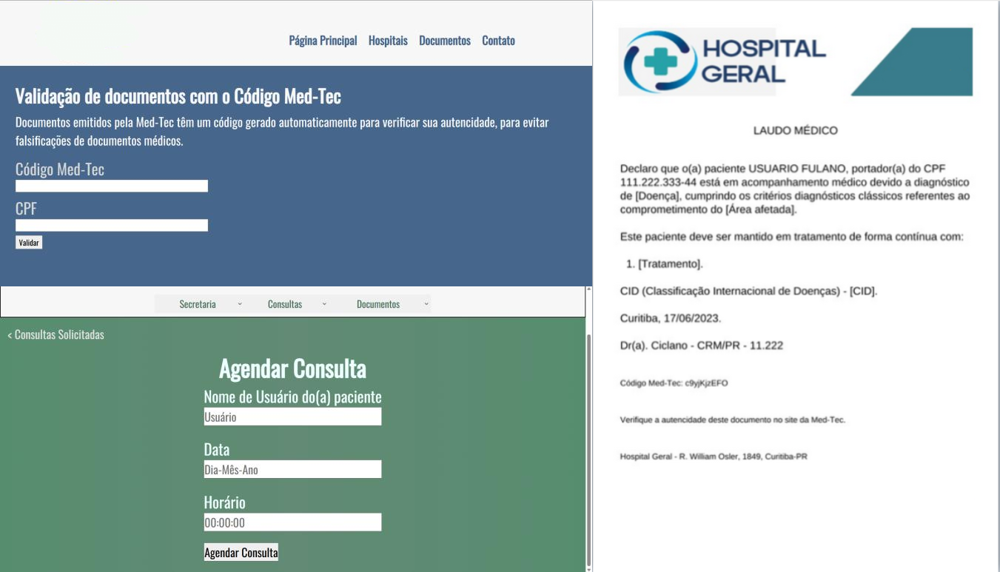

Experiência e Portfólio
Atualmente com aproximadamente 1 ano de experiência na área do Desenvolvimento de Software, estou sempre superando meus desafios e crescendo como profissional.
Conhecimento para trabalhar com: C#; Java; Python; Bancos de Dados SQL; Modelagem UML; Análise de Requisitos; Windows; Linux; HTML; CSS e JavaScript.
Desenvolvedor .NET
Desde agosto de 2025, estou trabalhando como Desenvolvedor .NET com C#. Sou responsável por criar e modificar algoritmos para implantação de sistemas .NET, assim como responder chamados de manutenções no sistema.
Técnico de Ensino de Sistemas
De julho de 2023 até março de 2024 eu trabalhei como Técnico de Ensino do curso Técnico em Desenvolvimento de Sistemas. Dei aulas de Programação de Aplicativos, Banco de Dados, Internet das Coisas, Modelagem de Sistemas e Introdução à Tecnologia da Informação e Comunicação.
Projetos
Projeto Med-Tec: Meu maior projeto desenvolvido ao momento, se trata de um sistema feito para gerenciamento de processos hospitalares, como agendamento de consultas, gerenciamento de pacientes, gerenciamento de documentos relacionados. Possui sistema de validação de documentos. Maioria em web, uma parte em um aplicativo desktop. Foi feito com PHP na parte web, Java na parte desktop, banco de dados SQL com o SGBD MySQL.
